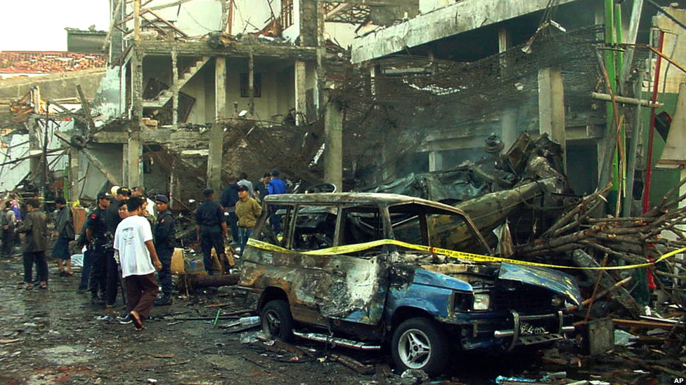
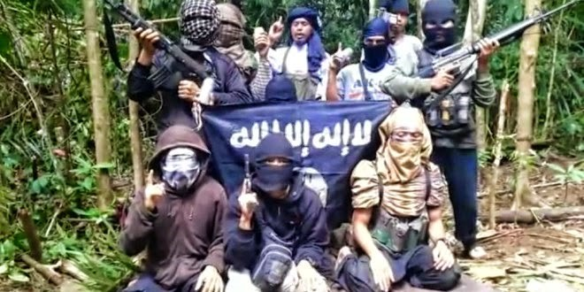
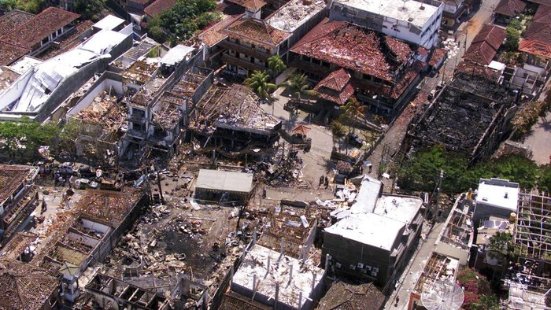

Amrozi
Peran
Pembeli bahan peledak, "The Smiling Assassin".
Nasib
Dihukum mati, dieksekusi 9 Nov 2008.
Telaah mendalam atas peristiwa terorisme terbesar di Indonesia — latar belakang, dampak, dan warisan yang tersisa dua dekade kemudian.
Tragedi Bom Bali I adalah sebuah aksi pengeboman di tiga lokasi di Bali yang terjadi pada 12 Oktober 2002 dan disebut sebagai peristiwa terorisme terparah dalam sejarah Indonesia. Tercatat 202 korban jiwa dan 324 orang luka-luka atau cedera, kebanyakan korban merupakan wisatawan asing yang sedang berkunjung ke lokasi tersebut. Korban terbanyak berasal dari Australia sebanyak 88 orang, diikuti Indonesia 38 orang, dan Britania Raya 26 orang.

Lebih dari 30 orang ditangkap atas keterlibatan mereka, dan semua pelaku berasal dari organisasi teroris Jemaah Islamiyah (JI) yang terafiliasi dengan al-Qaeda.
Ada beberapa faktor penyebab terjadinya Bom Bali 2002:


Dampak Kemanusiaan
Terdapat arsip yang menyebutkan nama-nama korban meninggal sejumlah 202 dan korban luka-luka sejumlah 324 orang serta terdapat juga arsip bangunan yang porak poranda akibat ledakan bom tersebut.
Dampak Pariwisata & Ekonomi
Dalam dua tahun berturut-turut setelah pemboman, kunjungan wisatawan turun lebih dari 40 persen. Lebih dari 200 ribu pekerjaan yang berkaitan dengan pariwisata tutup. Pendapatan devisa juga menurun 10,21 persen setelah pemboman 2002 dengan total kerugian setengah miliar dolar AS.
Dampak Sosial
Dari segi sosial, dampak peristiwa ini sangat besar. Masyarakat internasional dan komunitas Bali mengalami trauma mendalam.
Dampak Hukum
Beberapa hari setelah Bom Bali 1 terjadi, dibentuklah undang-undang yang khusus mengatur mengenai tindak pidana terorisme, yaitu dengan menyusun Peraturan Pemerintah Pengganti Undang-undang (Perpu) Nomor 1 Tahun 2002 yang pada tanggal 4 April 2003 disahkan menjadi Undang-undang Nomor 15 Tahun 2003 tentang Pemberantasan Tindak Pidana Terorisme.
Dampak Keamanan Nasional
Pemerintah Indonesia mengambil langkah-langkah untuk memperbaiki kapasitas keamanan nasional, termasuk pembentukan Detasemen Khusus 88 (Densus 88) yang memiliki tugas khusus dalam memerangi terorisme.